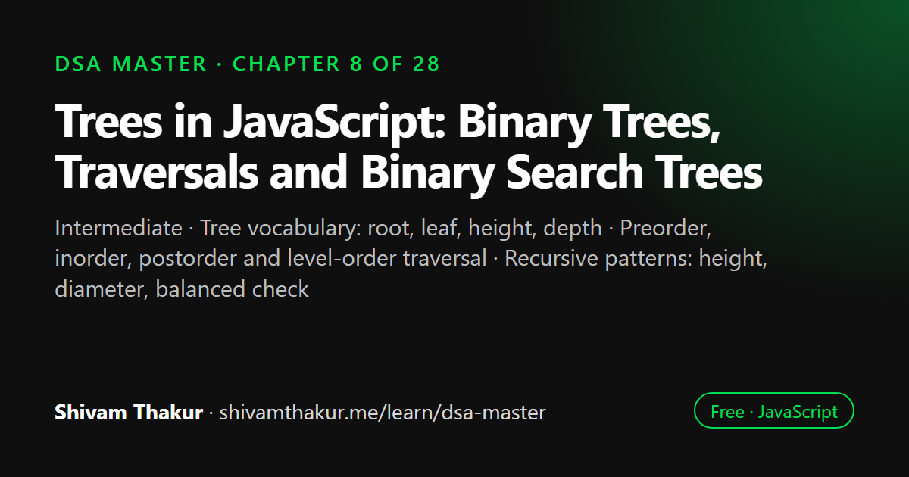

Chapter 8 of 28 · Intermediate
Trees in JavaScript: Binary Trees, Traversals and Binary Search Trees
Trees — Recursion Finally Meets Its Natural Home

A tree is a hierarchical structure of nodes where each node has children and exactly one parent, except the root. A binary search tree keeps smaller values on the left and larger values on the right, which allows O(log n) search when it is balanced. This chapter covers tree vocabulary, the four traversal orders, recursive tree metrics, BST operations and self-balancing trees.
In this chapter you will learn
- Tree vocabulary: root, leaf, height, depth
- Preorder, inorder, postorder and level-order traversal
- Recursive patterns: height, diameter, balanced check
- BST search, insert and delete
- Why self-balancing trees exist
8.0 Why Trees Feel Different From Everything Before Them
Every structure so far — arrays, linked lists, stacks, queues — has been fundamentally linear: one element follows another in a single line. Trees are the first genuinely hierarchical structure in this book, and they are where Chapter 2's recursion stops being "a clever technique you apply to arrays and numbers" and becomes "the single most natural language for describing the data itself." Recall the file-system example from Chapter 2, section 2.9 — "a folder contains files and/or more folders" — that is a tree, and every tree algorithm in this chapter will feel like a direct continuation of that exact idea.
8.1 What Is a Tree? (Definitions and Vocabulary)
Definition: A tree is a hierarchical data structure consisting of nodes connected by edges, where one node is designated the root, and every other node has exactly one parent, forming a structure with no cycles.
ASCII Visualization: Anatomy of a Tree
(root)
10
/ \
5 20 <- 5 and 20 are CHILDREN of 10
/ \ / \
3 8 15 25 <- 3, 8, 15, 25 are LEAF NODES (no children)
Vocabulary:
- ROOT: the top node (10) — the only node with no parent
- PARENT/CHILD: 10 is the parent of 5 and 20; 5 and 20 are children of 10
- SIBLINGS: 5 and 20 are siblings (same parent)
- LEAF: a node with no children (3, 8, 15, 25)
- EDGE: the connection between a parent and child
- SUBTREE: any node plus all of its descendants (e.g., the subtree rooted at 5 is {5,3,8})
- DEPTH of a node: number of edges from the root to that node (depth of 3 is 2)
- HEIGHT of a tree: the longest path from root to any leaf (height here is 2)
- DEGREE of a node: how many children it has (10 has degree 2)8.1.1 Binary Trees: The Star of This Chapter
Definition: A binary tree is a tree in which every node has at most two children, conventionally called the left child and right child.
class TreeNode {
constructor(value, left = null, right = null) {
this.value = value;
this.left = left;
this.right = right;
}
}
const tree = new TreeNode(10,
new TreeNode(5, new TreeNode(3), new TreeNode(8)),
new TreeNode(20, new TreeNode(15), new TreeNode(25))
);8.2 Tree Traversal: The Four Fundamental Orders
Definition: Traversal is the process of visiting every node in a tree exactly once, in some defined order. Because trees are hierarchical (not linear), there is no single "obvious" order — unlike an array, where "left to right" is the only sensible choice.
8.2.1 Depth-First Traversals: Preorder, Inorder, Postorder
All three of these share the same "go deep before going wide" character (recall Chapter 6's closing insight: DFS-style exploration is naturally stack/recursion-driven, LIFO in spirit) — they differ only in when, relative to visiting the children, you process the current node's own value.
10
/ \
5 20
/ \ / \
3 8 15 25Preorder (Root → Left → Right): process the node itself first, then recurse left, then recurse right.
function preorder(node, result = []) {
if (node === null) return result; // BASE CASE
result.push(node.value); // ROOT first
preorder(node.left, result); // then LEFT
preorder(node.right, result); // then RIGHT
return result;
}
console.log(preorder(tree)); // [10, 5, 3, 8, 20, 15, 25]Inorder (Left → Root → Right): recurse left first, then process the node, then recurse right.
function inorder(node, result = []) {
if (node === null) return result;
inorder(node.left, result); // LEFT first
result.push(node.value); // then ROOT
inorder(node.right, result); // then RIGHT
return result;
}
console.log(inorder(tree)); // [3, 5, 8, 10, 15, 20, 25]Postorder (Left → Right → Root): recurse both children first, process the node last.
function postorder(node, result = []) {
if (node === null) return result;
postorder(node.left, result); // LEFT first
postorder(node.right, result); // then RIGHT
result.push(node.value); // then ROOT, LAST
return result;
}
console.log(postorder(tree)); // [3, 8, 5, 15, 25, 20, 10]Dry Run: Preorder Step by Step
preorder(10):
push 10 result=[10]
preorder(5):
push 5 result=[10,5]
preorder(3):
push 3 result=[10,5,3]
preorder(null) -> base case, return
preorder(null) -> base case, return
preorder(8):
push 8 result=[10,5,3,8]
preorder(null), preorder(null)
preorder(20):
push 20 result=[10,5,3,8,20]
preorder(15):
push 15 result=[10,5,3,8,20,15]
preorder(25):
push 25 result=[10,5,3,8,20,15,25]
Final: [10, 5, 3, 8, 20, 15, 25]8.2.2 Iterative DFS Traversals (Using an Explicit Stack — Closing the Loop With Chapter 6)
Every recursive traversal can be rewritten iteratively using an explicit stack, directly exercising Chapter 6's lesson that "the call stack IS a stack" — here, we make that stack visible and manual.
function preorderIterative(root) {
if (root === null) return [];
const result = [];
const stack = [root]; // our Chapter 6 Stack, used via a plain array
while (stack.length > 0) {
const node = stack.pop();
result.push(node.value);
// Push RIGHT first, so LEFT is popped and processed first (LIFO!)
if (node.right !== null) stack.push(node.right);
if (node.left !== null) stack.push(node.left);
}
return result;
}
console.log(preorderIterative(tree)); // [10, 5, 3, 8, 20, 15, 25] — matches recursive!8.2.3 Breadth-First Traversal: Level-Order (Closing the Loop With Chapter 6's Queue)
Recall Chapter 6's single most important forward-looking fact: BFS uses a queue for FIFO, layer-by-layer exploration. Level-order tree traversal is exactly BFS applied to a tree.
function levelOrder(root) {
if (root === null) return [];
const result = [];
const queue = [root]; // used as a Queue via a plain array (enqueue=push, dequeue=shift for clarity here;
// in production, prefer Chapter 6's proper O(1)-dequeue Queue class!)
while (queue.length > 0) {
const node = queue.shift(); // NOTE: O(n) with a plain array (Chapter 6's classic trap!)
result.push(node.value);
if (node.left !== null) queue.push(node.left);
if (node.right !== null) queue.push(node.right);
}
return result;
}
console.log(levelOrder(tree)); // [10, 5, 20, 3, 8, 15, 25]8.3 Common Tree Metrics and Recursive Patterns
8.3.1 Height of a Tree
function height(node) {
if (node === null) return -1; // convention: an empty tree has height -1 (a single node has height 0)
const leftHeight = height(node.left); // "leap of faith" (Chapter 2): trust this is correct
const rightHeight = height(node.right);
return 1 + Math.max(leftHeight, rightHeight);
}8.3.2 Counting Nodes
function countNodes(node) {
if (node === null) return 0; // BASE CASE
return 1 + countNodes(node.left) + countNodes(node.right); // RECURSIVE CASE
}This is structurally identical to the getTotalSize file-system example from Chapter 2 — "1 (myself) plus the count of everything in my subtrees" is the exact same shape as "my size plus the size of everything in my subfolders."
8.3.3 Checking If a Tree Is Balanced
Definition: A tree is height-balanced if, for every node, the heights of its left and right subtrees differ by at most 1.
Naive approach — compute height separately at every node:
function isBalancedNaive(node) {
if (node === null) return true;
const leftHeight = height(node.left); // O(n) EVERY time this is called!
const rightHeight = height(node.right); // O(n) EVERY time this is called!
if (Math.abs(leftHeight - rightHeight) > 1) return false;
return isBalancedNaive(node.left) && isBalancedNaive(node.right);
}
// Time: O(n²) worst case — recomputing height() redundantly at every node,
// eerily similar to naive Fibonacci's overlapping sub-problems from Chapter 2!Optimized — compute height and check balance in a single traversal:
function isBalanced(node) {
function checkHeight(current) {
if (current === null) return 0;
const leftHeight = checkHeight(current.left);
if (leftHeight === -1) return -1; // propagate "unbalanced" signal upward immediately
const rightHeight = checkHeight(current.right);
if (rightHeight === -1) return -1;
if (Math.abs(leftHeight - rightHeight) > 1) return -1; // found imbalance HERE
return 1 + Math.max(leftHeight, rightHeight); // normal height calculation otherwise
}
return checkHeight(node) !== -1;
}
// Time: O(n) — each node's height is computed exactly ONCE, sharing results
// up the call stack instead of recomputing — the tree-shaped
// analogue of Chapter 2's memoization insight!8.3.4 Diameter of a Binary Tree (A Slightly Harder, Very Common Variant)
The problem: find the length (number of edges) of the longest path between any two nodes in the tree — the path does not need to pass through the root.
function diameter(root) {
let maxDiameter = 0;
function height(node) {
if (node === null) return 0;
const leftHeight = height(node.left);
const rightHeight = height(node.right);
// The longest path THROUGH this node = leftHeight + rightHeight (in edges)
maxDiameter = Math.max(maxDiameter, leftHeight + rightHeight);
return 1 + Math.max(leftHeight, rightHeight);
}
height(root);
return maxDiameter;
}8.4 Binary Search Trees (BSTs)
Definition: A Binary Search Tree is a binary tree with an additional ordering invariant: for every node, all values in its left subtree are less than the node's value, and all values in its right subtree are greater.
ASCII Visualization
20
/ \
10 30
/ \ / \
5 15 25 35
Every node's LEFT subtree is entirely SMALLER, RIGHT subtree entirely LARGER.
This holds RECURSIVELY at every single node, not just the root.Why This Invariant Is the Entire Point
This ordering invariant is precisely what makes BST operations resemble binary search from Chapter 1 — at every node, you can eliminate an entire subtree from consideration with a single comparison, exactly like eliminating half the phone book with one glance.
8.4.1 BST Search
function bstSearch(node, target) {
if (node === null) return false; // BASE CASE: not found
if (node.value === target) return true; // BASE CASE: found it
if (target < node.value) {
return bstSearch(node.left, target); // eliminate the entire right subtree!
} else {
return bstSearch(node.right, target); // eliminate the entire left subtree!
}
}Dry Run: Searching for 15 in the Tree Above
bstSearch(20, 15): 15 < 20 -> go LEFT (entire right subtree {30,25,35} eliminated!)
bstSearch(10, 15): 15 > 10 -> go RIGHT (entire left subtree {5} eliminated!)
bstSearch(15, 15): MATCH! return true
Only 3 comparisons needed, out of 7 total nodes — exactly binary search's efficiency.- Time: O(h) — proportional to height, not total node count directly. For a balanced BST,
h = O(log n), giving the famous O(log n) BST search. For a degenerate BST (values inserted in already-sorted order, producing a structure that's really just a linked list in disguise),h = O(n), giving O(n) worst case.
8.4.2 BST Insertion
function bstInsert(node, value) {
if (node === null) {
return new TreeNode(value); // BASE CASE: found the empty spot, create a new node here
}
if (value < node.value) {
node.left = bstInsert(node.left, value);
} else if (value > node.value) {
node.right = bstInsert(node.right, value);
}
// if value === node.value, we do nothing (no duplicates in this convention)
return node; // return the (possibly unchanged) node, rebuilding the path back up
}8.4.3 BST Deletion (The Trickiest BST Operation — Three Cases)
Deletion is where BSTs get genuinely tricky, because removing a node must preserve the BST invariant for all remaining nodes. There are three distinct cases.
Case 1: Deleting a leaf node (no children). Simply remove it.
Case 2: Deleting a node with one child. Replace the node with its single child.
Case 3: Deleting a node with two children. This is the hard case: you cannot simply remove it (which child would take its place?). The standard technique: find the node's inorder successor (the smallest value in its right subtree — equivalently, the leftmost node of the right subtree), copy that value into the node being "deleted," then recursively delete the successor from its original position (which is now guaranteed to be an easy Case 1 or Case 2 deletion, since the smallest value in a subtree can have at most a right child).
function bstDelete(node, value) {
if (node === null) return null; // value not found, nothing to do
if (value < node.value) {
node.left = bstDelete(node.left, value);
} else if (value > node.value) {
node.right = bstDelete(node.right, value);
} else {
// FOUND the node to delete
// Case 1: leaf node (no children)
if (node.left === null && node.right === null) {
return null;
}
// Case 2: only a right child
if (node.left === null) {
return node.right;
}
// Case 2 (mirror): only a left child
if (node.right === null) {
return node.left;
}
// Case 3: two children — find inorder successor (smallest in right subtree)
let successor = node.right;
while (successor.left !== null) {
successor = successor.left;
}
node.value = successor.value; // copy successor's value up
node.right = bstDelete(node.right, successor.value); // remove the successor from its old spot
}
return node;
}Dry Run: Deleting 20 (Two Children) From Our Example Tree
20 15
/ \ / \
10 30 delete 20 --> 10 30
/ \ / \ / / \
5 15 25 35 5 25 35
Step 1: node.value(20) matches target -> found the node to delete
Step 2: it has TWO children (10-side and 30-side) -> Case 3
Step 3: find inorder successor: go to node.right (30), then leftmost: 25
Step 4: copy successor's value (25) into node -> node.value becomes 25...
Wait — let's be precise: successor = 25 (leftmost of right subtree, which is 30 with left child 25).
node.value = 25.
node.right = bstDelete(30-subtree, 25) -> removes 25 from its original spot (a Case 1 leaf deletion,
since 25 has no children) -> 30-subtree becomes: 30 with left=null, right=35
Final tree:
25
/ \
10 30
/ \ \
5 15 358.5 Self-Balancing Trees: A Conceptual Introduction
We've now established, repeatedly, that BST operations are only O(log n) when the tree is balanced — and that naive insertion can produce a badly degenerate, linked-list-shaped tree. Self-balancing trees solve this by automatically restructuring themselves during insertion/deletion to maintain a height guarantee.
8.5.1 AVL Trees (Conceptual Overview)
Definition: An AVL tree is a self-balancing BST where, for every node, the heights of the left and right subtrees differ by at most 1 (exactly the isBalanced condition from section 8.3.3, but enforced continuously, not just checked after the fact).
When an insertion or deletion would violate this invariant, the tree performs rotations — local restructuring operations that fix the imbalance in O(1) time per rotation, with at most O(log n) rotations needed per insertion.
ASCII Visualization: A Right Rotation (Fixing a Left-Heavy Imbalance)
Before (imbalanced — "left-left" case, height difference > 1):
30
/
20
/
10
After a RIGHT ROTATION around 30:
20
/ \
10 30
The tree is now perfectly balanced, and the BST ordering invariant
(everything left of 20 is smaller, everything right is larger) is preserved.8.5.2 Red-Black Trees (Conceptual Overview)
Definition: A Red-Black tree is another self-balancing BST, using a different balancing strategy: each node is colored red or black, and a set of coloring rules (no two consecutive red nodes, every path from root to a null leaf has the same number of black nodes, etc.) guarantees the tree's height never exceeds roughly 2 log(n+1).
8.6 Edge Cases and Gotchas Checklist for Tree Problems
- Empty tree (
root === null). Does every function handle this as a clean base case? - Single-node tree. Height, diameter, and balance functions should all produce sensible values (height 0, diameter 0, balanced true).
- Skewed/degenerate trees (every node has only one child). Verify your complexity claims — this is when O(log n) silently becomes O(n).
- Duplicate values in a BST. Decide and state your convention (ignore duplicates, allow them in the right subtree only, etc.) — this affects search, insert, and delete correctness.
- BST validation with
Infinity/-Infinityboundaries — make sure your min/max range check uses strict inequalities (<=/>=) if duplicates should be rejected, matching your stated convention. - Height convention (-1 vs. 0 for empty tree) — pick one, state it, stay consistent throughout a solution.
- Iterative traversal push order — always dry-run a small 3-node example to verify your stack-based iterative traversal produces the same order as the recursive version.
8.7 Chapter Summary
This chapter was where recursion, introduced as an abstract technique in Chapter 2, finally met the data structure it was born to describe. We built the vocabulary of trees (root, parent, child, leaf, depth, height, subtree) and formalized the binary tree as a genuinely recursive definition — a node plus two smaller binary trees, or null — which directly powers every algorithm in the chapter via the same "base case for null, recursive case trusting the children are already handled correctly" rhythm from Chapter 2.
We mastered the three depth-first traversal orders (preorder, inorder, postorder), anchoring the mnemonic directly to where the root falls in each name, and specifically flagging that inorder traversal of a BST yields sorted output — one of the most tested single facts in this entire chapter. We converted these to iterative form using an explicit stack, directly cashing in Chapter 6's "the call stack IS a stack" lesson, and carefully noted the push-order subtlety that trips up most first attempts. We covered level-order (BFS) traversal, directly reusing Chapter 6's queue, and specifically flagged the classic .shift() performance trap from that same chapter, offering the "swap to a fresh array per level" fix that also naturally solves the common "group by level" variant.
We built the core recursive tree metrics — height, node count, balance checking, and diameter — using each as an opportunity to reinforce a recurring theme: naive recursive tree algorithms can silently hide redundant recomputation (an O(n²) trap structurally identical to naive Fibonacci from Chapter 2), fixable by computing shared sub-results exactly once per node and threading them upward, sometimes via closure-captured "running answer" variables (as in the diameter problem) rather than an explicit return value alone.
We then built the Binary Search Tree, whose entire value proposition is the ordering invariant that makes its operations resemble Chapter 1's binary search — but we were rigorous about the honest complexity claim: O(log n) only when balanced; O(n) worst case when degenerate, exactly mirroring Chapter 4's honest treatment of hash table complexity. We worked through BST insertion's elegant "reassign child to recursive result" idiom, and BST deletion's three cases in full, including the classic two-children case's inorder-successor technique. We closed with the correct range-narrowing technique for BST validation (contrasted against the common, insufficient "check only immediate children" mistake), and a conceptual (not implementation-level) introduction to self-balancing trees — AVL and Red-Black — as the direct answer to the degeneracy problem, closing the loop on "how do we actually guarantee O(log n), not just hope for it."
8.8 Revision Notes
- A binary tree is recursively defined:
null, or a value plus two binary trees (left and right) — every algorithm here exploits this directly. - Preorder (root-left-right), Inorder (left-root-right), Postorder (left-right-root) — mnemonic: where does "root" fall in the name?
- Inorder traversal of a BST produces sorted output — one of the most-tested single facts about trees.
- DFS traversal space complexity is O(h) (height), not O(log n) unconditionally — h ranges from O(log n) balanced to O(n) degenerate.
- Iterative traversals use an explicit stack (DFS) or queue (BFS/level-order) — directly Chapter 6's structures made visible.
- Naive recursive tree algorithms can hide O(n²) redundant recomputation (isBalancedNaive) — the same shape as naive Fibonacci; fix by computing shared results once per node.
- BST search/insert/delete are O(log n) only when balanced — O(n) worst case on a degenerate (linked-list-shaped) tree; never claim O(log n) unconditionally.
- BST deletion's hardest case (two children): copy the inorder successor's value up, then recursively delete the successor from its original position.
- BST validation must track a narrowing (min, max) range across the whole recursion, not just check immediate children.
- AVL and Red-Black trees solve BST degeneracy via automatic rebalancing (rotations); JavaScript has no built-in self-balancing tree —
Map/Setare hash-based, not tree-based.
8.9 Mind Map (ASCII)
TREES
|
+------------------+-----------+-----------+------------------------+
| | | |
VOCABULARY TRAVERSAL TREE METRICS BINARY SEARCH TREE
root/parent/ | (recursive patterns) |
child/leaf/ +--------+--------+ | Ordering invariant:
depth/height | | | Height, Count, left < node < right
| DFS DFS BFS/Level Balance, Diameter (RECURSIVELY)
Recursive (recursive) (iterative (Ch.6 Queue, | |
definition: | w/ Ch.6 "swap array Naive = O(n^2) Search/Insert/Delete
null OR Pre/In/Post Stack) per level" fix redundant = O(log n) BALANCED
{value, | | | recompute O(n) DEGENERATE
left, right} mnemonic: push order groups by (same shape |
where root matters! level free as naive Validation needs
falls in name Fibonacci!) (min,max) range,
| not local check
Inorder on BST |
= SORTED OUTPUT SELF-BALANCING TREES
AVL (rotations, strict)
Red-Black (looser, JS
has NEITHER built-in —
Map/Set are hash-based)8.10 Cheat Sheet
TRAVERSAL ORDERS
==================
Preorder: Root, Left, Right -> use for copying/serializing
Inorder: Left, Root, Right -> use for SORTED BST output
Postorder: Left, Right, Root -> use for bottom-up (delete tree, compute subtree info)
Level-order (BFS): row by row -> use for "by depth/level" questions
COMPLEXITY REFERENCE
=======================
DFS traversal: O(n) time, O(h) space (h = height, NOT log n unconditionally)
BST search/insert/del: O(h) -> O(log n) balanced, O(n) degenerate — ALWAYS state both
RECURSIVE TREE FUNCTION TEMPLATE
====================================
function solve(node) {
if (node === null) return /* base case answer */;
const leftResult = solve(node.left); // leap of faith
const rightResult = solve(node.right); // leap of faith
return /* combine leftResult, rightResult, and node.value */;
}
BST DELETE — THE THREE CASES
================================
1. Leaf (no children) -> remove it (return null)
2. One child -> replace node with that child
3. Two children -> copy inorder successor's value up,
then recursively delete successor
from its (now simple) original spot
BST VALIDATION — CORRECT APPROACH
=====================================
Pass down (min, max) range, narrowing at every level:
going LEFT: max tightens to current node's value
going RIGHT: min tightens to current node's value
NEVER just check a node against its immediate children only!8.11 Key Takeaways
- Binary trees are recursively defined; every algorithm in this chapter is the Chapter 2 "leap of faith" applied to
node.leftandnode.right. - Know the traversal mnemonic cold: root's position in the name (Pre/In/Post) tells you exactly when it's processed — and inorder-on-a-BST-equals-sorted is one of the most tested facts in this book.
- Tree space complexity is O(height), and height ranges from O(log n) to O(n) — never state O(log n) unconditionally for any tree operation.
- Naive recursive tree algorithms can hide redundant recomputation exactly like naive Fibonacci — always check whether a "compute once, share the result" restructuring is available.
- BST operations are only O(log n) when balanced; self-balancing trees (AVL, Red-Black) exist specifically to guarantee this, and JavaScript's native
Map/Setdo not provide this (they're hash-based, not tree-based).
8.12 20 Multiple Choice Questions
Tap an answer to check it. Your score updates as you go.
Score: 0 / 0 answered (20 questions)
What is the recursive definition of a binary tree?
In preorder traversal, when is the current node's value processed?
What special property does inorder traversal have when applied to a Binary Search Tree?
What is the space complexity of recursive DFS traversal, expressed correctly?
What data structure powers iterative DFS traversal, replacing the implicit call stack?
What data structure powers level-order (BFS) tree traversal?
What common performance trap appears when implementing level-order traversal with a plain array and
.shift()?Why is the naive
isBalancedNaivefunction O(n²) in the worst case?What is the honest, precise complexity claim for BST search?
What causes a BST to degenerate into O(n) operations?
In BST deletion, what technique handles the case where the node to delete has two children?
What is the inorder successor of a node in a BST?
Why is checking only a node against its immediate children insufficient for BST validation?
What is the correct approach for validating a BST?
What problem do self-balancing trees like AVL and Red-Black trees solve?
Does JavaScript have a built-in self-balancing binary search tree?
What is the height of a single-node tree, using the convention where an empty tree has height -1?
In the diameter-of-a-binary-tree problem, why might the longest path NOT pass through the root?
When pushing children onto an explicit stack for iterative preorder traversal, in what order should you push left and right children?
What real-world data structures are commonly implemented using Red-Black trees?
Show the answer key
1-b, 2-b, 3-b, 4-b, 5-b, 6-b, 7-b, 8-b, 9-b, 10-b, 11-b, 12-b, 13-b, 14-b, 15-b, 16-b, 17-b, 18-b, 19-b, 20-b
8.13 20 Coding Problems
Easy
- Implement preorder, inorder, and postorder traversal recursively, from memory.
- Write a function to count the total number of nodes in a binary tree.
- Write a function to find the maximum value in a binary tree (not necessarily a BST).
- Write a function to check if two binary trees are structurally identical with the same values (a direct callback to Chapter 2's coding problem #19).
- Write a function to invert (mirror) a binary tree — swap every node's left and right children.
Medium
- Implement the optimized O(n)
isBalancedfunction from memory (section 8.3.3). - Implement the diameter-of-a-binary-tree function from memory (section 8.3.4).
- Implement BST search, insert, and delete from memory (section 8.4), including all three deletion cases.
- Implement the correct
isValidBSTfunction using the (min, max) range technique from memory. - Given a binary tree, return the values grouped by level (a list of lists), using the "swap array per level" BFS technique.
Hard
- Given a BST, find the k-th smallest element using inorder traversal, stopping early once the k-th element is found (don't traverse the whole tree if avoidable).
- Given a binary tree, serialize it to a string and deserialize it back into an identical tree structure (use preorder with explicit null markers).
- Given a binary tree, find the lowest common ancestor (LCA) of two given nodes, without assuming BST ordering (a general binary tree LCA).
- Given a BST, find the lowest common ancestor of two given nodes, exploiting the BST ordering invariant for a more efficient solution than problem 13's general approach.
- Convert a sorted array into a height-balanced BST (hint: recursively pick the middle element as the root, directly connecting back to Chapter 1's binary search intuition).
Interview Level
- (Google-level) Given a binary tree, determine if it's symmetric (a mirror image of itself around its center), using recursive comparison of left and right subtrees.
- (Amazon-level) Given a BST representing a product catalog sorted by price, implement a range query function returning all products with prices between
minandmax, in better than O(n) time by pruning subtrees that can't contain valid values. - (Microsoft-level) Given a binary tree, find the maximum path sum between any two nodes (the path doesn't need to pass through the root), directly extending the diameter problem's "closure variable tracks running answer" technique to sums instead of lengths.
- (Meta-level) Given a binary tree representing a social network's follower hierarchy, find the maximum "influence sum" achievable by selecting nodes such that no two selected nodes are directly connected (parent-child) — the tree-shaped version of the classic "house robber" DP problem, previewed here and formalized in the Dynamic Programming chapters.
- (Netflix-level) Design a BST-backed "content catalog" supporting efficient range queries (find all content released between two dates) and discuss, in comments, why a self-balancing tree (AVL or Red-Black) would be necessary in production to guarantee consistent O(log n) performance regardless of insertion order (e.g., content added in strict chronological order, a realistic degenerate-BST risk).
8.14 5 Interview Questions
- "Walk me through the difference between preorder, inorder, and postorder traversal, and give a real use case for each." (Tests the mnemonic and practical application, not just definitions.)
- "What is the time complexity of BST search, and under what conditions does that change?" (Tests the honest O(log n)-if-balanced, O(n)-if-degenerate distinction.)
- "How would you delete a node with two children from a BST while preserving the ordering invariant?" (Tests the inorder-successor technique specifically.)
- "Why is checking a node only against its immediate children insufficient to validate a BST?" (Tests understanding of the range-narrowing technique and its necessity.)
- "What problem do self-balancing trees like AVL or Red-Black trees solve, and does JavaScript have one built in?" (Tests conceptual understanding plus a specific, correct piece of JavaScript trivia.)
8.15 3 Real Projects
- Complete BST Library: Build a full
BinarySearchTreeclass supporting search, insert, delete (all three cases), height, size, balance-checking, and all four traversal orders (including iterative versions), with a self-check script asserting correctness on both balanced and deliberately degenerate inputs. - Tree Visualizer CLI: Build a Node.js script that takes a small binary tree and prints an ASCII-art representation of its structure (similar to the diagrams in this chapter), plus reports its height, whether it's balanced, and whether it's a valid BST — a direct, practical reinforcement tool for this chapter's core concepts.
- Sorted Data Range-Query Service: Build a BST-backed module (extending coding problem #17) that ingests timestamped records and supports efficient "give me all records between date A and date B" queries, benchmarked against a naive linear-scan approach at increasing dataset sizes to empirically demonstrate the O(log n)-vs-O(n) gap discussed throughout this chapter.
8.16 Further Reading
- Donald Knuth, The Art of Computer Programming, Volume 1, section on tree structures, for the formal historical treatment.
- MDN Web Docs and the V8 blog for confirmation that JavaScript's
Map/Setare hash-based, not tree-based (search "V8 blog Map internals"). - Search "AVL tree rotations visualized" and "Red-Black tree insertion visualized" for interactive/animated deep dives into the rotation mechanics only conceptually introduced in this chapter.
- Steven Skiena, The Algorithm Design Manual, chapter on tree data structures, for additional real-world design discussion and further problem sets.
Binary Tree & BST in JavaScript: frequently asked questions
What is the difference between a binary tree and a binary search tree?
A binary tree only limits each node to at most two children. A binary search tree adds an ordering rule: every value in the left subtree is smaller than the node and every value in the right subtree is larger.
Which tree traversal gives sorted output for a BST?
Inorder traversal (left, node, right) visits the values of a binary search tree in ascending sorted order.
What is the time complexity of BST search?
O(h), where h is the tree's height. That is O(log n) for a balanced tree but O(n) for a skewed one, such as a BST built by inserting already sorted values.
What is the difference between DFS and BFS on a tree?
Depth-first traversals (preorder, inorder, postorder) go as deep as possible before backtracking and use recursion or a stack. Breadth-first (level-order) traversal visits nodes level by level using a queue.